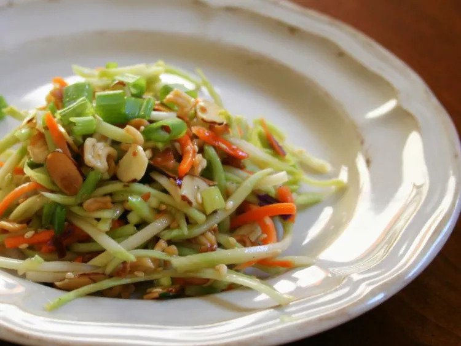

Crunchy Ramen Broccoli Slaw

Description:
Crunchy Ramen Broccoli Slaw is a flavorful and
vibrant dish that showcases the crispness of broccoli slaw mixed
with a delightful Asian-inspired dressing!
This recipe combines a medley of fresh and crunchy vegetables,
including broccoli slaw, red bell pepper, green onions, and toasted almonds,
creating a more refreshing and colorful salad. The dressing, made
with a blend of soy sauce, rice vinegar, sesame oil, and honey, adds a savory
and slightly sweet tang to the salad. The combination of textures and flavors,
from the crispness of the vegetables to the nuttiness of the almonds, makes
this slaw a delightful addition to any meal or a standalone light lunch. It is
a quick and easy recipe that offers a delicious twist on traditional
coleslaw, with a distinct Asian flair!
Ingredients:
- 1/4 cup of butter
- 2 (3 ounce) packages of Oriental-flavor ramen noodle soup, seasoning packet reserved
- 1/2 cup of slivered almonds
- 1/4 cup sesame seeds
- 1 (16 ounce) package of broccoli coleslaw mix
- 1/2 cup of chopped green onion
Dressing:
- 1/2 cup of salad oil
- 1/2 cup of white sugar
- 1/4 cup of apple cider vinegar
- 2 tablespoons of soy sauce
Steps:
- Preheat the oven to 350 degrees Fahrenheit (175 degrees Celcius)
- Melt butter in a microwave-safe bowl in the microwave.
Crush ramen noodles into small pieces; stir curshed noodles,
almonds, and sesame seeds into melted butter. Spread mixture onto
a baking sheet.
- Bake in the preheated oven until golden brown and crunchy,
8 to 10 minutes; allow to cool completely.
- Toss together coleslaw mix and green onion in a large serving bowl.
- Make dressing: Whisk together oil, sugar, vinegar, soy sauce, and reserved
seasoning packets in a separate bowl until well combined.
- Stir cooled mixture into dressing. Pour dressing over coleslaw-onion mixture; toss to coat.